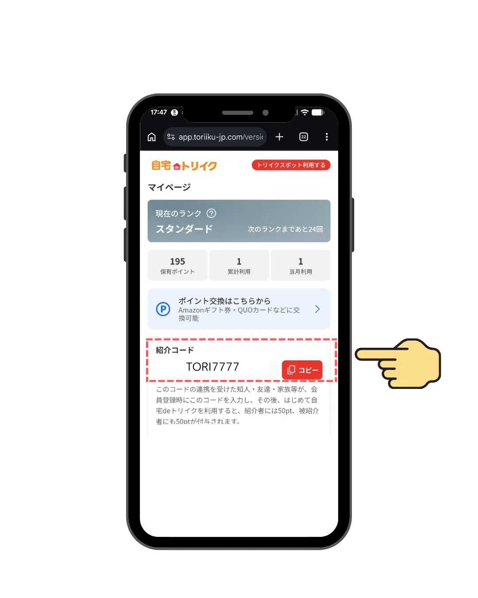
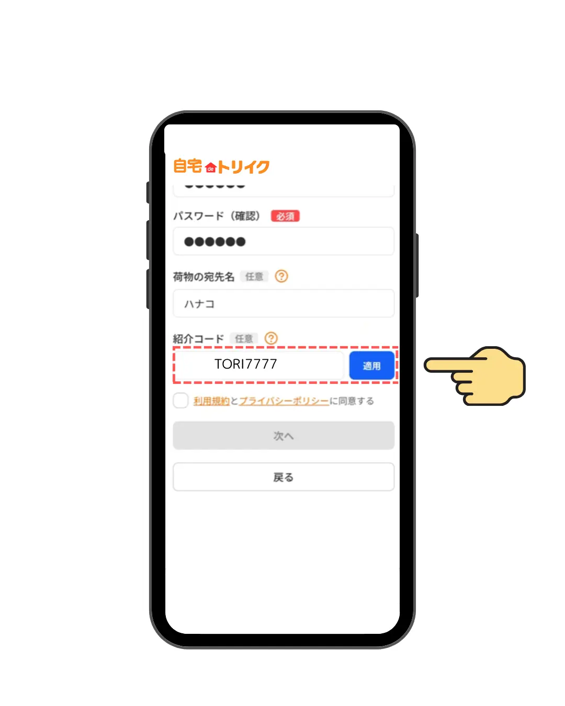

友だち紹介キャンペーン
自宅deトリイクを身近な人に紹介する（数十秒）と、紹介したあなたに200円分、紹介されたお友だちに100円分が進呈されます。
紹介したあなたに
200円分
紹介されたお友だちが、10月31日（土）までに、会員登録をしサービスを利用すると進呈されます。
紹介されたお友だちに
100円分
10月31日（土）までに、会員登録しサービスを利用（以下のSTEP 01～04を完了）すると進呈されます。
自宅deトリイクとは
自宅で受け取った荷物の伝票、
撮るだけでポイントに。
面倒な手続きは一切なし。ネット通販等で購入し受取った荷物の伝票を撮って送るだけで、年間最大8,000円相当のポイントがたまる国内初のサービスです。
令和7～8年度：国土交通省・補助対象事業トリイクの
メディア掲載・採択実績
キャンペーン参加方法
紹介コードをお友だちに送る
＜紹介する方＞
- ・マイページ内の「紹介コード」から、ご自身の専用コードをコピーしてお友だちにシェアします。
- ・紹介コードの確認方法は以下を参照ください。
アプリをダウンロードして会員登録
＜紹介されたお友だち＞
- ・アプリをダウンロードすると、「トリイクスポット」と「自宅deトリイク」が表示されますので「自宅deトリイク」を選択してください。
- ・新規会員登録の画面にある「紹介コード」欄にコードを入力して、登録を完了します。
- ・紹介コードの入力方法は以下を参照ください。
自宅で受け取った荷物の伝票を提出する
＜紹介されたお友だち＞
いつも通りネット通販等で購入した商品の荷物を自宅で受け取った後に、荷物に貼ってある「送り状（伝票）」を撮影して提出します。詳細はこちら
アンケートに回答して完了
＜紹介されたお友だち＞
- ・伝票提出後、アプリ上に表示される簡単なアンケートに10月31日（土）までに回答してください（アンケートは LINE、またはメールに届きます。もしくはアプリ内に表示されます）。
- ・「再配達はしなかったか」「時間指定で受け取れたか」など、ドライバーさんにやさしい受け取りをしていただくとさらにポイント UP。
- ・紹介されたお友だちの100円分は、ポイント履歴に「初回利用アンケート」として記載されます。
紹介コードの確認・入力方法
紹介する方：コードの確認

マイページ下部の「紹介コード」から、ご自身のコードを確認・コピーできます。
紹介されたお友だち：コードの入力

新規会員登録の画面にある「紹介コード」の項目にコードを入力し、「適用」を押してください。
自宅deトリイクはポイントももらえて、社会貢献！
・自宅deトリイクに参加することは、配送業界の人手不足に苦しむドライバーさんの負担軽減、そして脱炭素社会の実現に繋がります。
・現在、国土交通省と共に自宅deトリイクの普及促進を進めています。是非、人手不足で大変な思いをされているドライバーさんのためにお力添えください。
・自宅deトリイクは、ポイントのお得さだけでなく、社会にもやさしいサービスです。
よくある質問
FAQ
自宅で受け取った荷物の伝票をスマホで撮って送るだけで、ポイントがたまるサービスです。
無料でご利用いただけます（通信費のみお客様のご負担となります）。
国土交通省採択事業「物流負荷低減に向けた多様・柔軟な受取り方法普及促進事業」の一環として、物流の負荷低減にご協力いただいたお礼にポイントを還元しています。
すべての配送会社の荷物が対象です。
書状・はがき・小包などの「郵便物」は対象外です。
ポスト投函の「宅配便（ネコポスなど）荷物」で伝票が貼付されているものであれば、ご提出いただけます。
（伝票（送り状・宛名ラベル）がお手元に残らないものも、対象外です。）
できません。提出いただいた伝票とご登録の会員情報を照合してポイントを付与するため、ご本人宛の荷物が対象です。
荷物を受け取ったその日のうちに撮影・ご提出ください。
日本国内の主要なポイント・ギフト券に交換できます。
ご利用受付から原則72時間以内に確定します。
提出いただいた伝票は、ご登録情報との照合およびポイント付与の確認のみに使用します。それ以外の目的では利用しません。詳しくはプライバシーポリシーをご覧ください。
画像が不鮮明・情報が不足している場合は、LINEで再提出のご案内をお送りします。あらためてご提出いただければポイント付与の対象となります。
解決しない場合は、こちらからお気軽にお問い合わせください。
LINEで相談するご注意事項
- 【期間限定】本キャンペーンは2026年10月1日（木）～10月31日（土）の期間限定です。進呈条件（伝票提出＆アンケート回答）の両方を10月31日（土）までに完了した場合のみが対象となります。
- 【11/1以降は対象外】11月1日（日）以降のアンケート回答は、期間限定キャンペーンの対象外となります。
- 【アンケートについて】アンケートは伝票承認後、LINE、またはメールに届きます。もしくはアプリ内に表示されます。回答にかかる時間は約1-2分程度で、進呈には、このアンケート回答が必須です。
- 【ポイントの付与時期】紹介されたお友だちが最初に伝票を提出した時のポイント（初回利用ポイント100円分）は即時付与されます。紹介する方の200円分は、紹介されたお友だちがアンケート回答完了後、3営業日程度で付与されます。
- 紹介されたお友だちの100円分は、ポイント履歴に「初回利用アンケート」として記載されます。
- 初回利用ポイントとは：紹介されたお友だちが、初めて自宅deトリイクのサービスを利用し、荷物の伝票を提出およびアンケートに回答した際に付与されるポイント（100円分）を指します。これはサービス利用の基本条件達成時に自動的に付与される通常ポイントです。
- 紹介ポイントとは：本キャンペーン期間（10月1日～10月31日）に、あなたが紹介したお友だちが会員登録および初回伝票提出、アンケート回答を完了した場合に、紹介者であるあなたに付与されるキャンペーン期間限定の特典ポイント（200円分）を指します。
- 紹介キャンペーンコードは自宅deトリイクと、トリイクスポットと同様のコードとなり、両サービスでご利用いただけます。
- 紹介されたお友だちは、これまでに自宅deトリイクに登録・ご利用したことがない方に限ります（新規ユーザー様限定）。
- 本紹介キャンペーンの進呈額は、モニターキャンペーン（事前エントリー）との併用はできません。
- 同一人物による複数アカウントの作成や、架空のデータを用いた紹介行為など、不正が発覚した場合はすべての進呈額を無効とし、アカウントを停止させていただく場合があります。
- 本キャンペーンの内容は予告なく変更または終了する場合があります。あらかじめご了承ください。